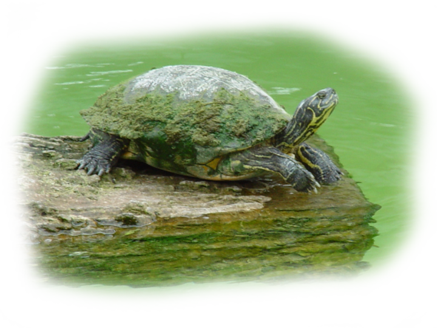

Projects
Here is where all of my projects will be held for the semester.
Forever Friends Rescue Sitemap
Here is my sitemap for the friends forever rescue website. As per the received information, I have included a detailed outline of the companies website and associated web pages, cohesively connecting the different aspects of the website to enhance the user experience and to make navigation as simple as possible.
Forever Friends Rescue Website
Welcome to the Forever Friends Rescue official website. Help our animals find their forever home using our brand-new website. Here you will be able to see our list of adoptable animals and get to know their wonderful personalities and stories. You can also find our personal mission, learn more about us, and find our contact information in the about us section. There's a blog area of the website that contains the latest news, events, and success stories from our organization.
Swallow Crest Farm Website
Contained within these four pointed walls of html, is my Swallow Crest Farm website project full of fun and amazment crafted to the needs of the client to ensure a responsive interactive environment. It features a total of nine pages the home, blog, distribution, csa distribution, subscription, blog, events, recipes, and contact pages each incorporating a section from the provided material given by the client in the discovery phase. The website boasts a green, blue, white color scheme to match the colors on the Swallow Crest Logo.

Portfolio Website
The purpose of my website is to provide potential clients with my extensive portfolio. Included in this webpage will be my experience with programming languages such as HTML, CSS, C#, C++, Javascript, and Python. All smaller coding projects will have their source code attached all programmed and designed by me.